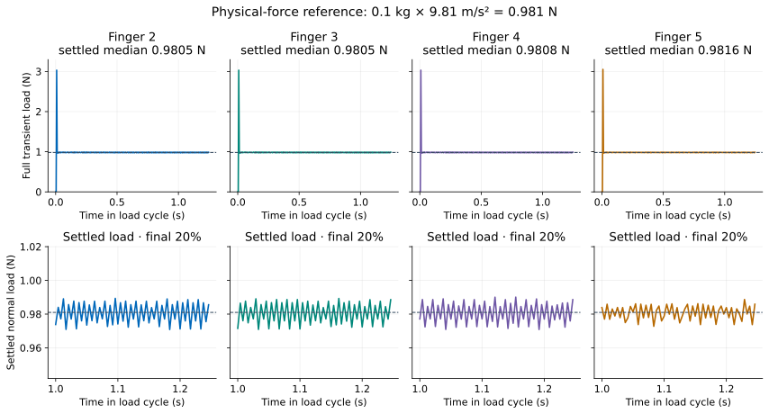
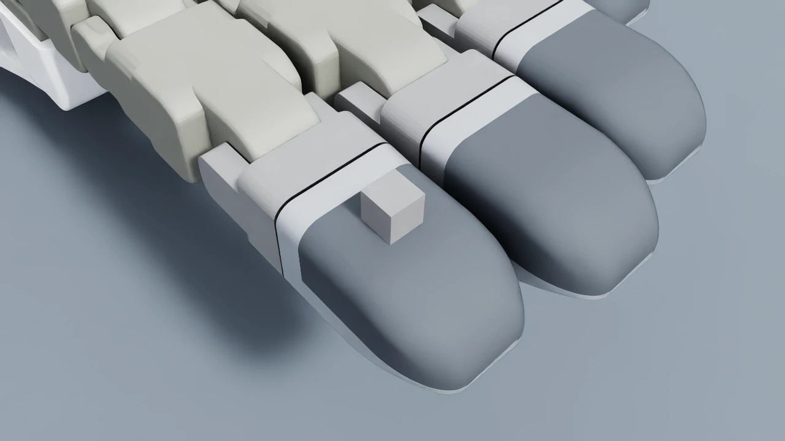

Validation
These commands launch Isaac Sim unless they only check an existing report. Complete installation first.
In the activated setup environment:
python -m pip install scipy rtree
MPLBACKEND=Agg python scripts/dex01_on_tesollo_dg5f.py \
--headless \
--flat-indenter \
--max-steps 1200 \
--verify-thumb \
--verification-report /tmp/dex01-hand.json
python scripts/verify_dex01_sim.py --check-hand-report /tmp/dex01-hand.json
The 0.1 kg flat load should settle near 0.981 N on each pressed finger, with zero on unloaded fingers. The checker verifies forces, counter-object filtering and momentum balance, then reports the separate thumb probe result. The gear can rock and is not a calibration load.
For the complete 740-contact sweep:
python scripts/verify_dex01_sim.py \
--headless \
--sweep-all \
--transformed-probe \
--wrapped-probe \
--num-envs 2 \
--report /tmp/dex01-contact.json
The wrapper case verifies that contact forces are filtered against the resolved
rigid body. Add --sensor-scale 1.5 to also check a scaled sensor and its taxel
layout. The supervising process rejects a missing report even if Isaac Sim
exits with code zero. Repository scripts explicitly load this checkout’s
sensor implementation, and fresh reports record its source hash.
For articulated motion checks, see stationary pressing.


The full load cycles include the initial impact transient. The lower panels
show the final 20% used for settling checks. The dashed line is m × g.
Verified fixture results
The supplied 740-taxel layout passes the following simulation fixtures:
Check |
Result |
|---|---|
Flat-load fixture, fingers 2–5 |
0.9805–0.9816 N against the 0.981 N reference; unloaded fingers zero |
Thumb localization and counter-object filtering |
Passed |
All 740 taxels, transformed probes, two environments |
Passed |
The hand report checker also checks filtered PhysX force agreement and momentum balance. Check new articulated poses for clearance, contact, and release using the stationary-press example. The press endpoint is measured after its attached sensor body settles. The fixture uses coplanar samples to align the pad and checks its underside gap during hold. Its force threshold is not a calibrated force-tracking controller.
Inspect the assembled geometry


The captured flat-load fixture retains the verified live body poses. Native RTX rendering preserves those poses and the recorded tactile frames.
On a host with the validated display/camera driver, generate several views:
MPLBACKEND=Agg python scripts/dex01_on_tesollo_dg5f.py \
--headless \
--enable_cameras \
--max-steps 1 \
--inspection-dir /tmp/dex01-views
Inspect the output images for five fully mounted fingertips, clearance around the rigid finger backing, and alignment of the contact sample markers with the exterior. For any new trajectory, check contact and release as well as the visual fit. A screenshot complements the numerical checks; it does not replace a force or invariance report.
Re-run the commands above when geometry or sensing changes. Keep the JSON reports and simulator logs with review evidence. Documentation build checks validate the site, while these commands validate the simulation.
Articulated pressing
The Tesollo pressing scenario moves finger 2 against a fixed gear. Run three cycles without a viewport and check the report:
MPLBACKEND=Agg python scripts/dex01_stationary_press.py \
--headless --max-steps 900 \
--verification-report /tmp/dex01-articulated.json
python scripts/dex01_stationary_press.py \
--check-report /tmp/dex01-articulated.json
The checker verifies wrist/object invariance, joint movement, fingertip travel, face alignment, contact coverage, mapping, and release. At least 90% of samples under the triangulated gear underside must carry load, with load in all four quadrants. Face-normal mismatch must stay below 0.05°, and no underside edge may sit more than 2 µm above the pad plane. These tolerances test broad planar contact; a nonzero total force alone is insufficient.
The setup selects coplanar taxels within the fingertip’s planar patch. The gear’s underside must fit inside that patch. Joint targets maintain the pad’s orientation while advancing it toward the gear. Controller gains and endpoint fractions are simulation settings; this check does not calibrate hardware force tracking.
Robotiq grasp, hold, and release
Run the grasp scenario in two environments and check its report independently:
python scripts/dex01_on_robotiq_2f85.py \
--headless --num-envs 2 --no-tactile-ui \
--verification-report /tmp/robotiq-contact.json
python scripts/dex01_on_robotiq_2f85.py \
--check-report /tmp/robotiq-contact.json
Both pads must sustain contact in every environment and unload after opening. The checker also requires finger motion, a stationary base, and agreement between taxel loads, tactile images, and filtered PhysX normal forces. Contacts generated before a discrete taxel penetrates the block are reported separately; unresolved contact is not permitted during the sustained hold.
The left/right hold-force difference must remain below 0.1 N. An independent momentum check compares the free block’s measured momentum change with the sum of normal and friction impulses, using a 1 µN·s tolerance. Gravity and damping are disabled on the block, so this fixture checks grasp contact dynamics rather than a known weight.